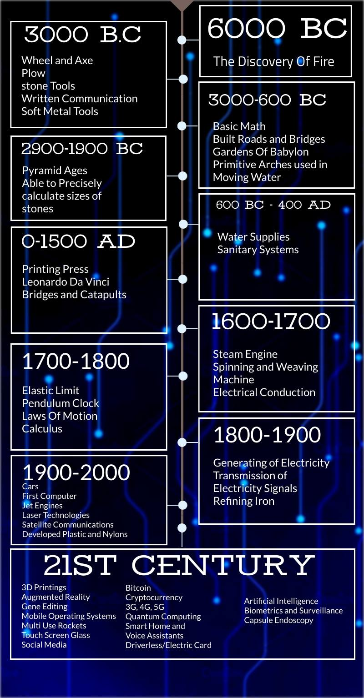

Humans are believed to be the most intelligent creature on Earth, we Humans have been adapting since time immemorial and have found ways in order to live life comfortably. There shall always be prodigies that will uncover inventions, methods and processes to further develop and improve the prowess of humanity. At first, there were no languages, electricity, or even the knowledge to govern each other. However, as civilizations started to develop, people have been finding ways to adapt to their environment, using everything in sight to achieve what we are today.
It all started with the need to survive, people back then will start to find object that will help them survive, caves to shelter during rain, sharp rocks to hunt animals then eventually they discovered fire, which is used to warm their body temperatures and to cook their food.
Fire is the pillar of all inventions which are tangible to us today. In the 3000 BC era, people back then, uses tools for cultivating lands and further improve their agriculture. In the 1900 BC, is the era of the pyramids and people back then were able to precisely measure the rocks and stone and use them for structures. In 600 BC, there where bridges and roads to alleviate the problems of transportation and travelling, basic math existent in this era.
In the 1500 AD, the first printing set was made, and Leonardo da Vinci’s inventions and artworks were made during this era. During the 1600-1700’s Weaving Machines and the world’s first steam engine was made, the electrical conduction was discovered and therefore sparked the idea of using electricity to power machines and other devices. Calculus and Laws of Motion were discovered by Sir Isaac Newton. In 1800’s Generating Electricity was possible and so was transmission of electricity signals for machines. In the 20th Century, the marvels of engineering were evidently blooming as cars, the first computer, laser technologies, satellite communications and many other inventions were the peak of humanity’s prowess to evolve and advance.
In the 21st Century, in our present time, there are still many innovations and inventions on the work, engineers are still learning, and a lot has yet to come. It is exhilarating to find out what humanity can do in the next decades to come.
© CPE11S2. just a simple credit lol.